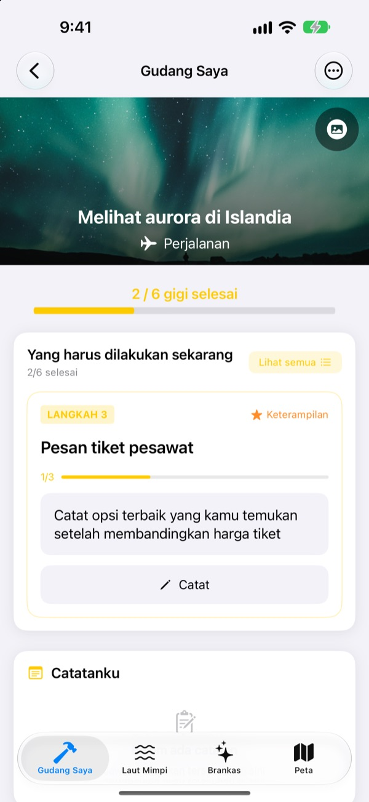
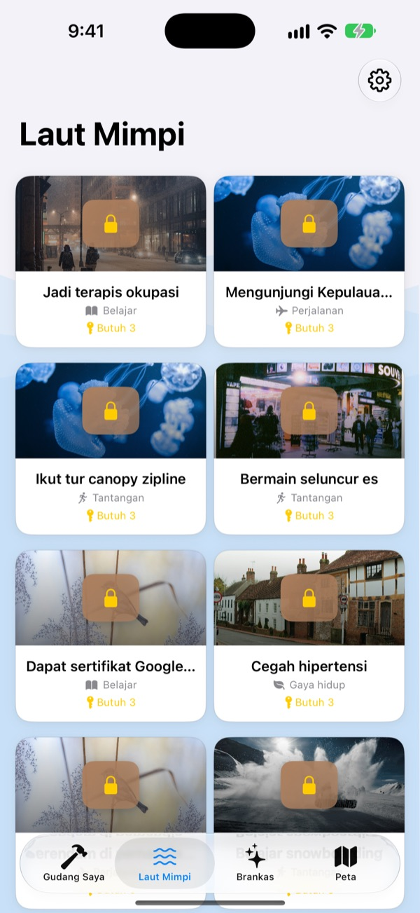
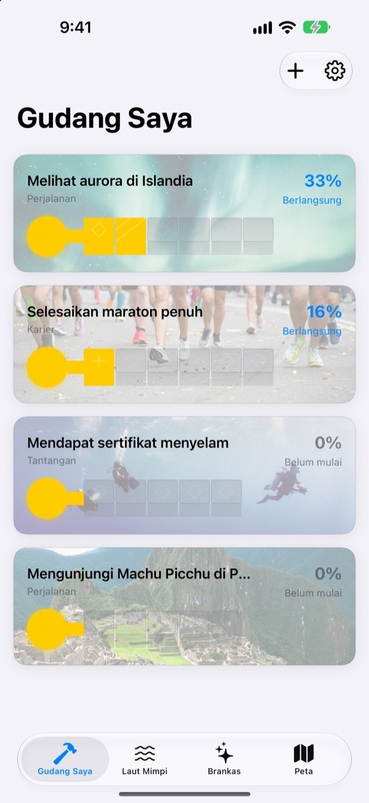
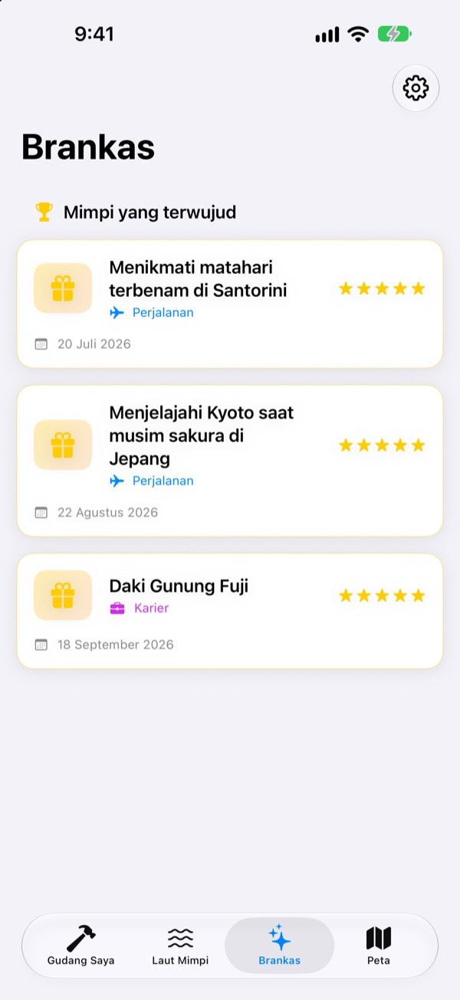

Jangan cuma menulis
bucket list-mu
Pilih satu mimpi, dan langkah-langkah kecil menuju ke sana menjadi gerigi sebuah kunci. Jawab langkah hari ini satu pertanyaan demi satu, dan tanpa terasa peti mimpimu terbuka.
Sekali beli, semua fitur bisa dipakai. Tanpa langganan, tanpa iklan.

Selesaikan kuncinya
Mimpi melihat aurora di Islandia tinggal dua langkah lagi. Jawab tiap pertanyaan dalam satu baris (boleh dikosongkan) lalu ketuk Berikutnya. Tiap langkah yang selesai mengisi satu gerigi, dan kunci yang lengkap membuka peti.
Pernah menulis bucket list lalu melupakannya?
"Melihat aurora" terlalu besar sampai bingung mulai dari mana, jadi hanya diam di daftar bertahun-tahun. Dream Seeker memecahnya jadi langkah yang bisa dikerjakan hari ini, seperti mencari tahu musimnya, menabung, dan memesan tiket pesawat, lalu hanya menampilkan satu langkah untuk sekarang.
Pilih dari lebih dari 590 mimpi
Perjalanan, pengalaman, pencapaian, kesehatan, belajar, dan hubungan. Mimpi dari enam bidang mengapung di dalam peti di Laut Mimpi. Bawa yang kamu suka ke Gudang Saya, langkah-langkahnya sudah dipecah.
Mimpimu tidak ada? Buat sendiri dengan judul, bidang, dan langkah yang diperlukan.

Satu gerigi demi satu, secukupnya untuk hari ini
Di Gudang Saya, terlihat sekilas sejauh mana kunci tiap mimpi sudah jadi. Langkah yang perlu dikerjakan sekarang ada di paling atas, dan menjawab pertanyaannya mengisi satu gerigi.
Jawaban dan foto tersimpan di Catatanku, dan kamu bisa melihat lagi seluruh perjalanan di Linimasa progres.

Mimpi yang terwujud masuk Brankas, tempat impian masuk peta
Isi semua gerigi lalu buka petinya. Mimpi yang terwujud tersimpan di Brankas beserta tanggalnya, dan mimpi yang dijeda juga menunggu di sana sampai kamu siap melanjutkan.
Mimpi yang punya tempat tampil di peta, jadi semua tempat yang ingin kamu datangi terlihat sekaligus.

Mulai dalam tiga langkah
- 1
Pilih mimpi
Ketuk peti di Laut Mimpi, lalu pilih Bawa ke Gudang Saya.
- 2
Jawab langkah hari ini
Jawab pertanyaan di langkah paling atas satu per satu untuk mengisi gerigi.
- 3
Buka petinya
Saat semua gerigi terisi, kunci selesai dan peti mimpi terbuka.
Enam bidang di Laut Mimpi
- Perjalanan
- Melihat aurora di Islandia · Menikmati matahari terbenam di Santorini
- Pengalaman
- Mencoba skydiving · Mencoba paralayang
- Pencapaian
- Selesaikan maraton penuh · Trekking ke Everest Base Camp
- Kesehatan
- Pull-up 20 kali · Bentuk otot perut
- Belajar
- Fasih berbahasa Inggris · Fasih berbahasa Prancis
- Hubungan
- Keliling dunia bersama orang tua · Tinggal sebulan di Jeju bersama teman
Tiap bidang berisi hampir seratus mimpi. Buat mimpimu sendiri lewat Tambah mimpi baru di Gudang Saya.
Sekali beli, dapat semuanya
Aplikasinya
- Lebih dari 590 mimpi dengan pertanyaan di tiap langkah
- Mimpi buatan sendiri
- Catatanku dengan foto dan Linimasa progres
- Brankas dan peta
- Mode Tumbuhkan Mimpi
- Pembaruan berikutnya
Dukung pengembang (opsional)
- Kalau aplikasinya membantu, kamu bisa mengirim tip kecil dari Pengaturan
- Tip tidak membuka apa pun. Tanpa tip, semua fitur tetap bisa dipakai
Tip sekali bayar, bukan langganan.
Tidak ada fitur berbayar tambahan di dalam aplikasi. Tanpa akun, tanpa iklan.
Pertanyaan umum
Bagaimana cara mulai?
Di tab Laut Mimpi, ketuk peti yang kamu suka lalu pilih Bawa ke Gudang Saya. Di Gudang Saya, jawab pertanyaan pada langkah saat ini dan gerigi akan terisi satu per satu. Setelah semuanya terisi, petinya bisa dibuka.
Bisakah menambah mimpi sendiri?
Bisa. Di Gudang Saya, ketuk Tambah mimpi baru lalu isi judul, bidang, dan langkah untuk mewujudkannya.
Bagaimana menjeda atau melanjutkan mimpi?
Di menu mimpi yang sedang berjalan, pilih Lepaskan mimpi ini dan mimpi itu pindah ke Mimpi yang dijeda di Brankas. Di sana, ketuk Mulai lagi untuk mengembalikannya ke Gudang Saya, atau Hapus permanen untuk menghapusnya.
Apa itu Mode Tumbuhkan Mimpi?
Layar yang mengelola mimpi seperti mendaki gunung. Nyalakan atau matikan di Pengaturan > Tampilan. Kamu bisa mengatur tenggat tiap langkah dan hambatan seperti biaya dan waktu layaknya sebuah proyek.
Fotonya tidak muncul.
Sebagian foto latar mimpi diunduh dari internet. Periksa apakah kamu terhubung ke internet. Tanpa koneksi, gambar bawaan yang ditampilkan.
Bisakah memindahkan catatan ke iPhone baru?
Catatan hanya tersimpan di perangkat ini, tanpa akun atau sinkronisasi. Saat memulihkan iPhone baru dari cadangan iCloud atau komputer, catatan ikut pindah bersama data aplikasi lain.
Apakah ada pembelian di dalam aplikasi?
Tidak ada. Setelah punya aplikasinya, semua fitur bisa dipakai. Tip di Pengaturan hanya pilihan kalau kamu ingin berterima kasih.
Apakah mimpi dan catatanku dikirim ke mana-mana?
Tidak. Tidak ada akun, iklan, maupun alat analitik. Mimpi, catatan, dan fotomu tetap di perangkat ini.
Bagaimana cara menghubungi kalian?
Laporan bug, ide fitur, atau apa saja, kirim lewat Kirim masukan di Pengaturan aplikasi atau lewat DM Instagram (@lee25_ios).
Ada pertanyaan atau masalah? Kirim ke leeo@kakao.com.